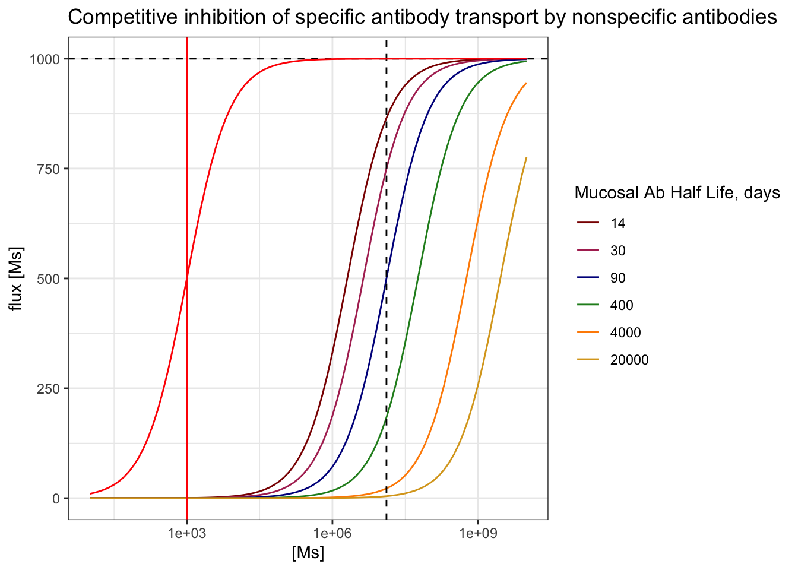
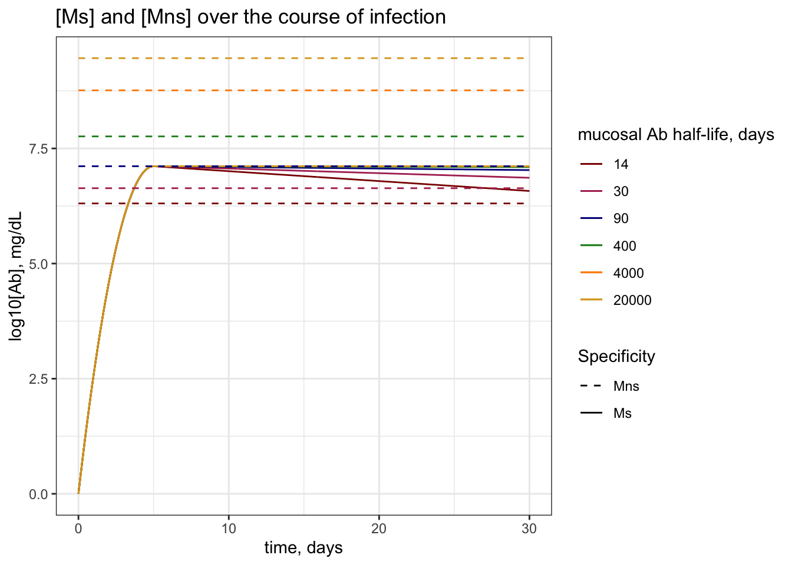
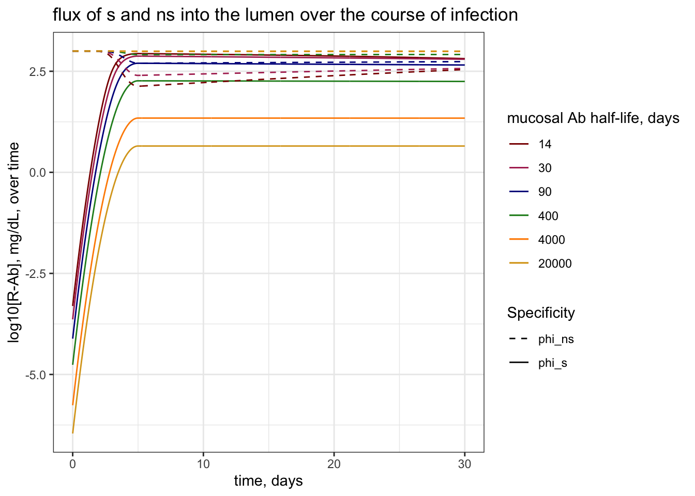
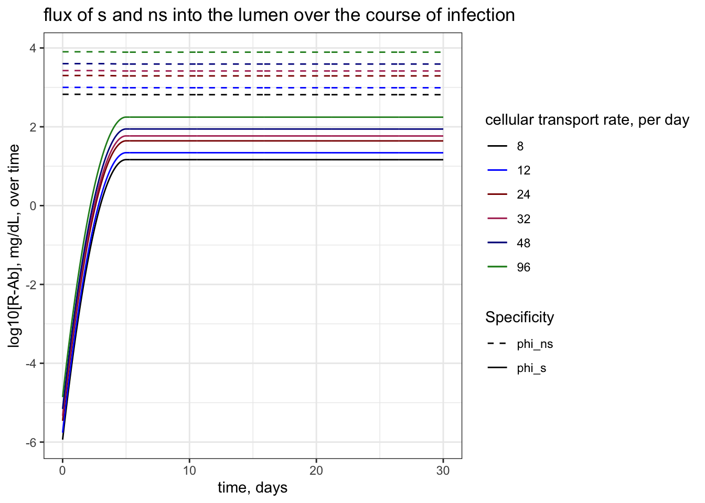
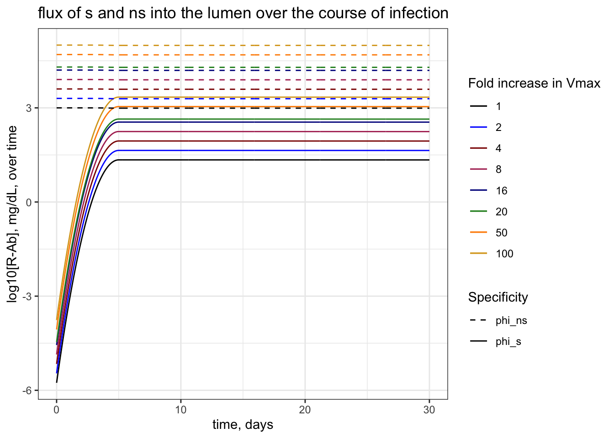
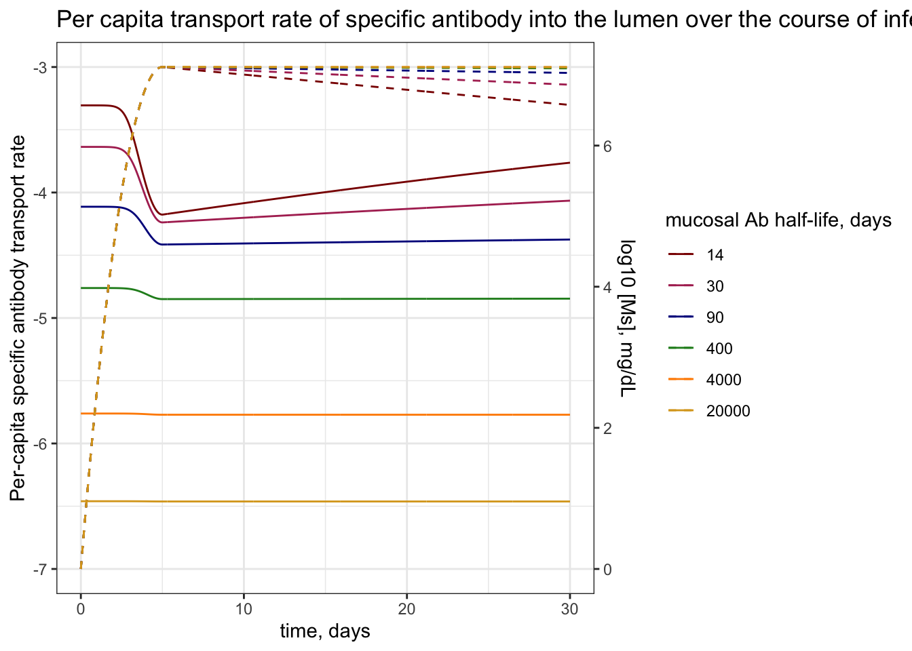
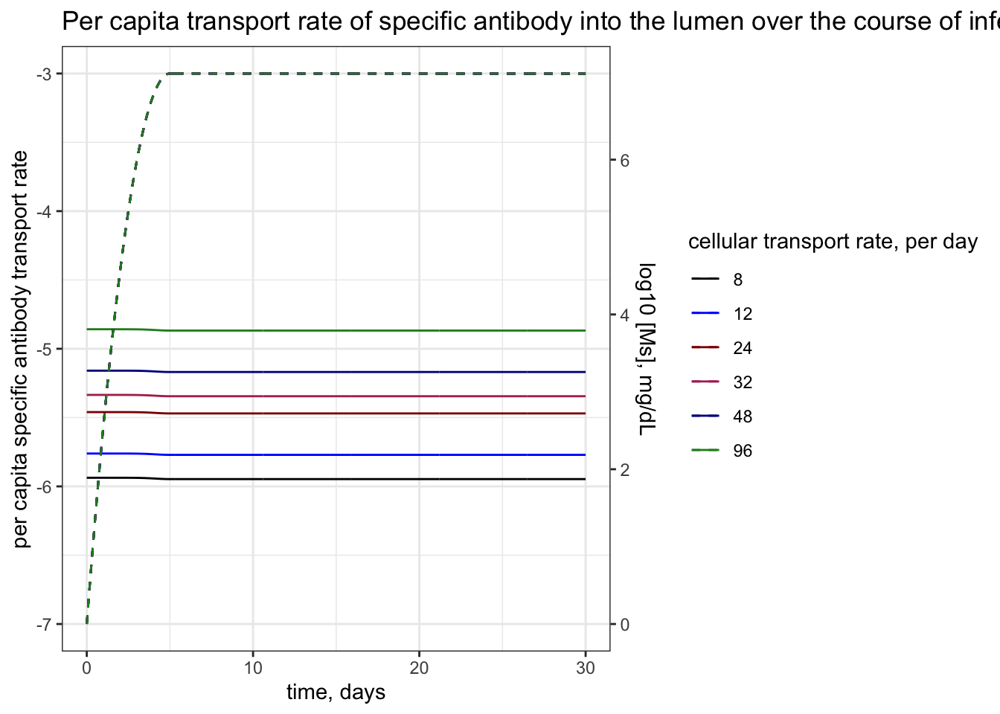
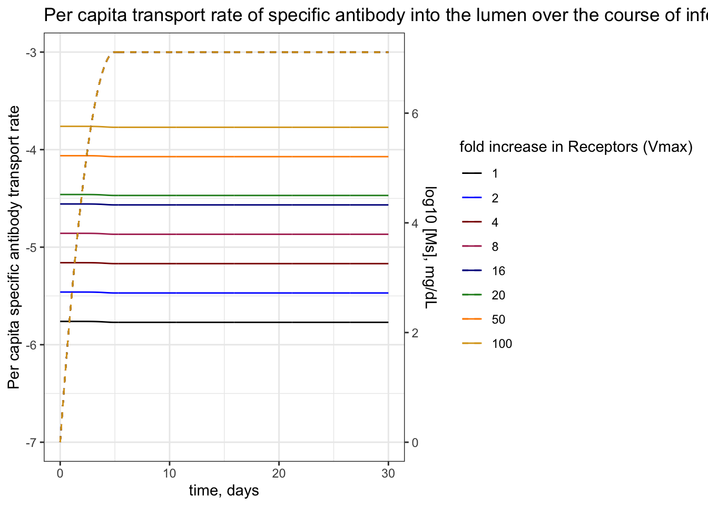

── Conflicts ────────────────────────────────────────── tidyverse_conflicts() ──
✖ dplyr::combine() masks gridExtra::combine()
✖ dplyr::filter() masks stats::filter()
✖ dplyr::lag() masks stats::lag()
ℹ Use the conflicted package (<http://conflicted.r-lib.org/>) to force all conflicts to become errors
#choose plotting colorsmy_colors =c("darkred", "maroon", "darkblue", "forestgreen", "darkorange", "goldenrod") #choose color rangenum_colors =length(my_colors) #set number of colors needed for plottingmy_colors =colorRampPalette(my_colors)(num_colors) #increase number of colors staying in color range
Objective
In this document, we evaluate how long-lived IgA antibody titers in the respiratory mucosa interfere with the transport of specific IgA antibodies to the site of infection. We assume that the concentration of \(M_{ns}\) changes negligibly over the course of infection, and assume that the steady state concentration of \(M_{ns}\) is proportional to \(\frac{c}{d_\mu}\). We use a Michaelis-Mentin approximation to estimate the flux of specific IgA across the mucosal membrane.
Outline
I will review the kinetics inferred by the Michaelis-Mentin approximation before presenting the results of competitive inhibition by non-specific immunity during a specific response.
The results in this document are organized as follows:
First, we will explore the effect of changing \(d_\mu\), \({k_2}\), and \(R_T\) on the total flux of specific IgA, \(k_2R_S\) (or \(\phi_S\)) over time.
We will then explore the effect of these two parameters, as well as \(V_{max}\) on the efficiency of the response over time, which we define as \(\epsilon_S = \frac{k_2R_s}{M_s}\).
Finally, we will explore the peak flux and integral of flux by the peak, as well as the peak efficiency of the response, as a function of both \(d_\mu\) and \(\frac{k_2}{k_1}\) and as a function of \(d_\mu\) and \(V_{max}\), to explore which variable has the greatest effect of reducing the effect of pre-existing immunity on primary responses.
Michaelis-Mentin Kinetics
Below, we define our parameters:
# transportVmax =10^3# order of magnitude of peak response # we might vary this laterk2 =1/(2/24) #rate of transport - 1/T of transport which is 1/2hours or 1/2/24ths of a dayRT = Vmax/k2 #total number (concentration) of receptors, Vmax = k2RTk1 = k2/10^3#k2/min(Mns_vec) #rate of antibody binding such that KM is on the order of 10^3KM = k2/k1 #checking KM# dynamics in the lumen t_half_L =3#half life of antibodies in the lumen, in daysd_L =log(2)/t_half_L #decay rate in the lumen# steady state nonspecific antibodiesc =1*10^5#rate of influx of nonspecific IgA, Ab/time - comes from pb/dA - in mg/dl per dayt_halfs =c(14,30,90,400, 4000, 20000) #half lives of mucosal ab in days - 2 weeks, 1 month, 3 months, 1 year, 10 years, 50 years :) 69 d_mus =log(2)/t_halfs #half lives in daysnames(d_mus) = t_halfsMns_vec = c/d_mus #vecotr of approximate ss solutionsnames(Mns_vec) = t_halfs# generation of new responseAp = Mns_vec["90"] #peak antibody titer will be the same as Mns for 90 days#initial ab titerA0 =1# initial specific ab concentrationtp =5#time of peak titer -- days# will be calculated when iterating through d_mu#r0 = (2*log(Ap/A0)/tp) + d_mu #initial/greatest exponential expansion rate#alpha = (r0 - d_mu)/tp # rate of decay of exponential growth rate
Below, we plot how the flux of specific antibody for a given concentration of \(M_s\) in the mucosa changes as a function of the half-life of non-specific antibodies. In essence, the effective amount of \(M_s\) required to reach half-maximal transport will increase by the concnetration of non-specific antibody conferred by the increasing half-life.
#set concentrations of Ms for x axisconcentrations =10^seq(1, 10, by =0.1) #range of concentrations M_s such that we span much less than and much greater than Ap### plot flux vs [Ms] given each Mns flux_df =lapply(t_halfs, function(t_half){# set d_mu and Mns d_mu =log(2)/t_half Mns = c/d_mu#calculate flux flux =sapply(concentrations, function(Ms){return(MM_function(M_s = Ms, M_ns = Mns)) }) %>%cbind("Ms"= concentrations, "flux"= ., "t_half"= t_half) %>%as.data.frame() }) %>%do.call(rbind, .) %>%as.data.frame() ## plotplot =ggplot() +geom_line(data = flux_df, aes(x = (Ms), y = flux, group =factor(t_half), col =factor(t_half))) +geom_hline(yintercept = Vmax, linetype ="dashed") +geom_vline(xintercept = (KM), color ="red") +geom_vline(xintercept = (Ap), linetype="dashed") +geom_line(aes(x = concentrations, y =sapply(concentrations, function(Ms){Vmax*Ms/(KM+Ms)})),inherit.aes =FALSE,color ="red") +scale_x_continuous(trans ="log10") +scale_color_manual(values = my_colors) +labs(x ="[Ms]", y ="flux [Ms]", color ="Mucosal Ab Half Life, days", title ="Competitive inhibition of specific antibody transport by nonspecific antibodies") +theme_bw()# print to viewerprint(plot)

The horizontal dashed line shows the greatest possible transport rate, \(V_{max}\); the red curve shows the MM kinetics given \([M_s]\) only; the vertical red line shows the 50% saturation concentration given \([M_s]\) only, \(K_M\); and I have added a vertical dashed line to show the peak concentration of \(M_s\) generated over an infection.
Notice that I have chosen paramerters such that, in the absence of competition, the maximum flux is reached by the the maximum concentration of \(M_s\) generated during a response. As nonspecific antibody is added, however, the flux achieved at the maximum specific antibody concentration drops. This is the core of the competitive effect.
Below, I show the generation and decay of \(M_s\) over the course of infection with respect to the steady-state concentration of \(M_{ns}\) for increasing half-life of mucosal antibodies.
### plot Ms vs Mns over timeMab_titers =lapply(t_halfs, function(t_half){# setting t.half dependent parms for nonspecific population d_mu =log(2)/t_half #set d_mu Mns = c/d_mu # steadys state nonspecific# setting t.half dependent parms for specific abs r0 = (2*log(Ap/A0)/tp) + d_mu #initial/greatest exponential expansion rate alpha = (r0 - d_mu)/tp # rate of decay of exponential growth rate# set time vector parms Tmax =30# total days points_per_day =24# every hour time =seq(0, Tmax, length.out = Tmax*points_per_day) #generate time vector### apply to calculate soln =data.frame("time"= time, "Ms"=sapply(time, function(t){if(t<=tp){A0*exp((r0 - d_mu)*t - (alpha/2)*t^2)}else {Ap*exp(-d_mu*(t-tp))} }))# solve soln = soln %>%cbind(.,Mns, t_half)}) %>%do.call(rbind, .) #concatenates all dfs from lapply list into a single df rowwise### Plotplot =ggplot() +geom_line(data = Mab_titers, aes(x = time, y =log10(Ms), group =factor(t_half), col =factor(t_half), linetype ="Ms")) +geom_line(data = Mab_titers, aes(x = time, y =log10(Mns), group =factor(t_half), col =factor(t_half), linetype ="Mns")) +scale_color_manual(values = my_colors) +scale_linetype_manual(values =c("Ms"="solid", "Mns"="dashed")) +labs(x ="time, days", y ="log10[Ab], mg/dL", col ="mucosal Ab half-life, days", linetype ="Specificity", title ="[Ms] and [Mns] over the course of infection") +theme_bw()#print to viewerprint(plot)

I have chosen the peak of the response such that the peak titer matches the steady state of the nonspecific antibody for an intermediate half-life.
Results 1: Flux over time as a function of \(d_\mu\) or \(\frac{k_2}{k_1}\)
The flux of specific IgA over time will depend on competition with pre-existing immunity. This competition changes according to i) the amount of non-specific pre-exisitng immunity, which is a function of the rate of decay of responses, and ii) the magnitude of the peak specific antibody titer with respect to the saturation of transport, which we can change as a funtion of \(K_M\), the half saturation point, which equals \(\frac{k_2}{k_1}\).
Flux over time as a function of \(d_\mu\)
Below, we calculate the flux of specific IgA over time as a function of the decay rate of previously generated IgA:
MM_soln =lapply(t_halfs, function(t_half){# setting t.half dependent parms for nonspecific population d_mu =log(2)/t_half #set d_mu Mns = c/d_mu # steadys state nonspecific# setting t.half dependent parms for specific abs r0 = (2*log(Ap/A0)/tp) + d_mu #initial/greatest exponential expansion rate alpha = (r0 - d_mu)/tp # rate of decay of exponential growth rate# set time vector parms Tmax =30# total days points_per_day =24# every hour time =seq(0, Tmax, length.out = Tmax*points_per_day) #generate time vector### apply to calculate Ms titers over time Ms_soln =data.frame("time"= time, "t_half"= t_half, "Ms"=sapply(time, function(t){if(t<=tp){A0*exp((r0 - d_mu)*t - (alpha/2)*t^2)}else {Ap*exp(-d_mu*(t-tp))} }), "Mns"= Mns)### apply to calculate Ls flux over time Ms_soln$phi_s =sapply(Ms_soln$Ms, function(Ms){MM_function(M_s = Ms, M_ns = Mns)}) Ms_soln$phi_ns =sapply(Ms_soln$Ms, function(Ms){(Vmax*Mns)/(KM+Ms+Mns)})return(Ms_soln)}) %>%do.call(rbind, .)
#ggplotplot =ggplot() +geom_line(data = MM_soln, aes(x = time, y =log10(phi_s), group =factor(t_half), col =factor(t_half), linetype ="phi_s")) +geom_line(data = MM_soln, aes(x = time, y =log10(phi_ns), group =factor(t_half), col =factor(t_half), linetype ="phi_ns")) +scale_color_manual(values = my_colors) +scale_linetype_manual(values =c("phi_s"="solid", "phi_ns"="dashed")) +labs(x ="time, days", y ="log10[R-Ab], mg/dL, over time", col ="mucosal Ab half-life, days", linetype ="Specificity", title ="flux of s and ns into the lumen over the course of infection") +theme_bw()print(plot)

Flux over time as a function of \(k_2\)
Below we define the range of \(K_M\) over which to calculate our antibody. We will set our half life to 5 years, which is still substantially faster than for systemic immunity.
# set parms #transport k2_vec =1/(c(0.25,0.5,0.75,1,2,3)/24)Vmax = k2_vec*RT #Vmax increases as well as KM when k2 increasesk1 = k1KM_vec = k2_vec/k1#lument_half_L = t_half_Ld_L = d_L#steady state Abc = ct_half =4000d_mu =log(2)/t_halfMns = c/d_mu# generating new responseAp = ApA0 = A0tp = tp
MM_soln =lapply(k2_vec, function(k2.new){ KM = k2.new/k1 Vmax = k2.new*RT# setting t.half dependent parms for specific abs r0 = (2*log(Ap/A0)/tp) + d_mu #initial/greatest exponential expansion rate alpha = (r0 - d_mu)/tp # rate of decay of exponential growth rate# set time vector parms Tmax =30# total days points_per_day =24# every hour time =seq(0, Tmax, length.out = Tmax*points_per_day) #generate time vector### apply to calculate Ms titers over time Ms_soln =data.frame("time"= time, "k2"= k2.new, "Ms"=sapply(time, function(t){if(t<=tp){A0*exp((r0 - d_mu)*t - (alpha/2)*t^2)}else {Ap*exp(-d_mu*(t-tp))} }), "Mns"= Mns)### apply to calculate Ls flux over time Ms_soln$phi_s =sapply(Ms_soln$Ms, function(Ms){(Vmax*Ms)/(KM+Ms+Mns)}) Ms_soln$phi_ns =sapply(Ms_soln$Ms, function(Ms){(Vmax*Mns)/(KM+Ms+Mns)})return(Ms_soln)}) %>%do.call(rbind, .)
#ggplotplot =ggplot() +geom_line(data = MM_soln, aes(x = time, y =log10(phi_s), group =factor(k2), col =factor(k2), linetype ="phi_s")) +geom_line(data = MM_soln, aes(x = time, y =log10(phi_ns), group =factor(k2), col =factor(k2), linetype ="phi_ns")) +scale_color_manual(values =c("black", "blue", my_colors)) +scale_linetype_manual(values =c("phi_s"="solid", "phi_ns"="dashed")) +labs(x ="time, days", y ="log10[R-Ab], mg/dL, over time", col ="cellular transport rate, per day", linetype ="Specificity", title ="flux of s and ns into the lumen over the course of infection") +theme_bw()print(plot)

The increase in the rate of transport increases the half-saturation titer \(K_M\) as well as the maximum flux \(V_max\). I have varied \(k_2\) such that the transport rate varies from 1 per 15 minutes to 1 per 3 hours. As a result of this small range of physiologically reasonable rates and the change in two conflicting increasing parameters, the effect of increasing \(k_2\) is more muted.
NOTE: The effect is likely to increase when we consider the full model, because higher rate of transport and Vmax will reduce the SS concentration of non-specific Ab
Same with increasing \(V_{max}\) alone, which is what I will explore below:
Flux over time as a function of \(V_{max}\)
# set parms #transport k2 =1/(2/24)Vmax_factors =c(1,2,4,8,16,20,50,100)Vmax = k2*(RT*Vmax_factors) #Vmax increases as well as KM when k2 increasesk1 = k1KM = k2/k1#lument_half_L = t_half_Ld_L = d_L#steady state Abc = ct_half =4000d_mu =log(2)/t_halfMns = c/d_mu# generating new responseAp = ApA0 = A0tp = tp
MM_soln =lapply(Vmax_factors, function(Vmax_factor){ Vmax = k2*RT*Vmax_factor# setting t.half dependent parms for specific abs r0 = (2*log(Ap/A0)/tp) + d_mu #initial/greatest exponential expansion rate alpha = (r0 - d_mu)/tp # rate of decay of exponential growth rate# set time vector parms Tmax =30# total days points_per_day =24# every hour time =seq(0, Tmax, length.out = Tmax*points_per_day) #generate time vector### apply to calculate Ms titers over time Ms_soln =data.frame("time"= time, "Vmax_Factor"= Vmax_factor, "Total_R"= RT*Vmax_factor, "Ms"=sapply(time, function(t){if(t<=tp){A0*exp((r0 - d_mu)*t - (alpha/2)*t^2)}else {Ap*exp(-d_mu*(t-tp))} }), "Mns"= Mns)### apply to calculate Ls flux over time Ms_soln$phi_s =sapply(Ms_soln$Ms, function(Ms){(Vmax*Ms)/(KM+Ms+Mns)}) Ms_soln$phi_ns =sapply(Ms_soln$Ms, function(Ms){(Vmax*Mns)/(KM+Ms+Mns)})return(Ms_soln)}) %>%do.call(rbind, .)
#ggplotplot =ggplot() +geom_line(data = MM_soln, aes(x = time, y =log10(phi_s), group =factor(Vmax_Factor), col =factor(Vmax_Factor), linetype ="phi_s")) +geom_line(data = MM_soln, aes(x = time, y =log10(phi_ns), group =factor(Vmax_Factor), col =factor(Vmax_Factor), linetype ="phi_ns")) +scale_color_manual(values =c("black", "blue", my_colors)) +scale_linetype_manual(values =c("phi_s"="solid", "phi_ns"="dashed")) +labs(x ="time, days", y ="log10[R-Ab], mg/dL, over time", col ="Fold increase in Vmax", linetype ="Specificity", title ="flux of s and ns into the lumen over the course of infection") +theme_bw()print(plot)

Again, the steady state nonspecific will change if Vmax is consistently high. So, the effect may be greater in the model considering transport in the SS calculation of the nonspecific titer. I’ll run that later to verify the extent to which the conclusions change in that context.
Efficiency over time
We can calculate/report efficiency according to a few metrics. I suggest two below:
\(\frac{k_2R_s}{M_s}\) - the flux of \(R_s\) relative to \(M_s\) or, in other words, the per-capita transport rate of specific antibody into the lumen relative to the existing pool of specific antibody in the mucosa, or in other words for each \(M_s\) sitting in the mucosa, how much specific antibody is being transported to the lumen per unit time?
the fraction of specific to nonspecific antibody either being delivered or in the lumen. should just reflect the fraction of specific to nonspecific in the mucosa.
We are going to report the first measurement of efficiency for now.
I will start by re-defining our basic parameters:
# transportVmax =10^3# order of magnitude of peak response # we might vary this laterk2 =1/(2/24) #rate of transport - 1/T of transport which is 1/2hours or 1/2/24ths of a dayRT = Vmax/k2 #total number (concentration) of receptors, Vmax = k2RTk1 = k2/10^3#k2/min(Mns_vec) #rate of antibody binding such that KM is on the order of 10^3KM = k2/k1 #checking KM# dynamics in the lumen t_half_L =3#half life of antibodies in the lumen, in daysd_L =log(2)/t_half_L #decay rate in the lumen# steady state nonspecific antibodiesc =1*10^5#rate of influx of nonspecific IgA, Ab/time - comes from pb/dA - in mg/dl per dayt_halfs =c(14,30,90,400, 4000, 20000) #half lives of mucosal ab in days - 2 weeks, 1 month, 3 months, 1 year, 10 years, 50 yearsd_mu =log(2)/40000#half lives in daysMns = c/d_mu #vecotr of approximate ss solutions# generation of new responseAp = Mns_vec["90"] #peak antibody titer will be the same as Mns for 90 days#initial ab titerA0 =1# initial specific ab concentrationtp =5#time of peak titer -- days# will be calculated when iterating through d_mu#r0 = (2*log(Ap/A0)/tp) + d_mu #initial/greatest exponential expansion rate#alpha = (r0 - d_mu)/tp # rate of decay of exponential growth rate
\(/Epsilon_s\) by decay rate
# set parms #transport Vmax = Vmaxk2 = k2RT = RTk1 = k1KM = KM#lument_half_L = t_half_Ld_L = d_L#steady state Abc = ct_halfs = t_halfsd_mus =log(2)/t_halfs #half lives in daysnames(d_mus) = t_halfsMns_vec = c/d_mus #vecotr of approximate ss solutionsnames(Mns_vec) = t_halfs# generating new responseAp = ApA0 = A0tp = tp
Because \(k_2R_s\) = \(phi_s\), the efficiency \(\epsilon_s = \frac{k_2 R_s}{M_s}\) can be calculated as \(\epsilon_s = \frac{\phi_s}{M_s}\).
Really, this is the per-capita transport rate given by the Michaelis Mentin approximation, \(\frac{phi_s}{M_s} = \frac{V_{max}}{K_M + M_ns + M_s}\).
We plot this over time over the course of infection.
MM_soln =lapply(t_halfs, function(t_half){# setting t.half dependent parms for nonspecific population d_mu =log(2)/t_half #set d_mu Mns = c/d_mu # steadys state nonspecific# setting t.half dependent parms for specific abs r0 = (2*log(Ap/A0)/tp) + d_mu #initial/greatest exponential expansion rate alpha = (r0 - d_mu)/tp # rate of decay of exponential growth rate# set time vector parms Tmax =30# total days points_per_day =24# every hour time =seq(0, Tmax, length.out = Tmax*points_per_day) #generate time vector### apply to calculate Ms titers over time Ms_soln =data.frame("time"= time, "t_half"= t_half, "Ms"=sapply(time, function(t){if(t<=tp){A0*exp((r0 - d_mu)*t - (alpha/2)*t^2)}else {Ap*exp(-d_mu*(t-tp))} }), "Mns"= Mns)### apply to calculate Ls flux over time Ms_soln$MM_s =sapply(Ms_soln$Ms, function(Ms){MM_function(M_s = Ms, M_ns = Mns)/Ms})return(Ms_soln)}) %>%do.call(rbind, .)
#ggplot# --- rescale log10(Ms) onto the primary axis so it can share the panel ---prim <-c(-7, -3) # primary axis range (per-capita transport)sec <-range(log10(MM_soln$Ms)) # secondary data range (log10 Ms)to_prim <-function(x) (x - sec[1]) /diff(sec) *diff(prim) + prim[1]to_sec <-function(x) (x - prim[1]) /diff(prim) *diff(sec) + sec[1]plot =ggplot(MM_soln, aes(x = time, col =factor(t_half))) +geom_line(aes(y =log10(MM_s), group =factor(t_half))) +geom_line(aes(y =to_prim(log10(Ms)), group =factor(t_half)), linetype ="dashed") +scale_y_continuous(name ="Per-capita specific antibody transport rate",limits = prim,sec.axis =sec_axis(~to_sec(.), name ="log10 [Ms], mg/dL") ) +scale_color_manual(values = my_colors) +labs(x ="time, days", col ="mucosal Ab half-life, days", title ="Per capita transport rate of specific antibody into the lumen over the course of infection") +theme_bw()print(plot)

Per-capita specific transport over time as a function of \(k_2\)
Below we define the range of \(k_2\) over which to calculate our antibody. We will set our half life to 5 years, which is still substantially faster than for systemic immunity.
# set parms #transport k2_vec =1/(c(0.25,0.5,0.75,1,2,3)/24)Vmax = k2_vec*RT #Vmax increases as well as KM when k2 increasesk1 = k1KM_vec = k2_vec/k1#lument_half_L = t_half_Ld_L = d_L#steady state Abc = ct_half =4000d_mu =log(2)/t_halfMns = c/d_mu# generating new responseAp = ApA0 = A0tp = tp
MM_soln =lapply(k2_vec, function(k2.new){ KM = k2.new/k1 Vmax = k2.new*RT# setting t.half dependent parms for specific abs r0 = (2*log(Ap/A0)/tp) + d_mu #initial/greatest exponential expansion rate alpha = (r0 - d_mu)/tp # rate of decay of exponential growth rate# set time vector parms Tmax =30# total days points_per_day =24# every hour time =seq(0, Tmax, length.out = Tmax*points_per_day) #generate time vector### apply to calculate Ms titers over time Ms_soln =data.frame("time"= time, "k2"= k2.new, "Ms"=sapply(time, function(t){if(t<=tp){A0*exp((r0 - d_mu)*t - (alpha/2)*t^2)}else {Ap*exp(-d_mu*(t-tp))} }), "Mns"= Mns)### apply to calculate Ls flux over time Ms_soln$phi_s =sapply(Ms_soln$Ms, function(Ms){(Vmax)/(KM+Ms+Mns)})return(Ms_soln)}) %>%do.call(rbind, .)
#ggplot# --- rescale log10(Ms) onto the primary axis so it can share the panel ---prim <-c(-7, -3) # primary axis range (per-capita transport)sec <-range(log10(MM_soln$Ms)) # secondary data range (log10 Ms)to_prim <-function(x) (x - sec[1]) /diff(sec) *diff(prim) + prim[1]to_sec <-function(x) (x - prim[1]) /diff(prim) *diff(sec) + sec[1]plot =ggplot(MM_soln, aes(x = time, col =factor(k2))) +geom_line(aes(y =log10(phi_s), group =factor(k2))) +geom_line(aes(y =to_prim(log10(Ms)), group =factor(k2)), linetype ="dashed") +scale_y_continuous(name ="per capita specific antibody transport rate",limits = prim,sec.axis =sec_axis(~to_sec(.), name ="log10 [Ms], mg/dL") ) +scale_color_manual(values =c("black", "blue", my_colors)) +labs(x ="time, days", col ="cellular transport rate, per day", title ="Per capita transport rate of specific antibody into the lumen over the course of infection") +theme_bw()print(plot)

Per-capita specific transport over time as a function of \(V_{max}\)
# set parms #transport k2 =1/(2/24)Vmax_factors =c(1,2,4,8,16,20,50,100)Vmax = k2*(RT*Vmax_factors) #Vmax increases as well as KM when k2 increasesk1 = k1KM = k2/k1#lument_half_L = t_half_Ld_L = d_L#steady state Abc = ct_half =4000d_mu =log(2)/t_halfMns = c/d_mu# generating new responseAp = ApA0 = A0tp = tp
MM_soln =lapply(Vmax_factors, function(Vmax_factor){ Vmax = k2*RT*Vmax_factor# setting t.half dependent parms for specific abs r0 = (2*log(Ap/A0)/tp) + d_mu #initial/greatest exponential expansion rate alpha = (r0 - d_mu)/tp # rate of decay of exponential growth rate# set time vector parms Tmax =30# total days points_per_day =24# every hour time =seq(0, Tmax, length.out = Tmax*points_per_day) #generate time vector### apply to calculate Ms titers over time Ms_soln =data.frame("time"= time, "Vmax_Factor"= Vmax_factor, "Total_R"= RT*Vmax_factor, "Ms"=sapply(time, function(t){if(t<=tp){A0*exp((r0 - d_mu)*t - (alpha/2)*t^2)}else {Ap*exp(-d_mu*(t-tp))} }), "Mns"= Mns)### apply to calculate Ls flux over time Ms_soln$phi_s =sapply(Ms_soln$Ms, function(Ms){(Vmax)/(KM+Ms+Mns)})return(Ms_soln)}) %>%do.call(rbind, .)
#ggplot# --- rescale log10(Ms) onto the primary axis so it can share the panel ---prim <-c(-7, -3) # primary axis range (per-capita transport)sec <-range(log10(MM_soln$Ms)) # secondary data range (log10 Ms)to_prim <-function(x) (x - sec[1]) /diff(sec) *diff(prim) + prim[1]to_sec <-function(x) (x - prim[1]) /diff(prim) *diff(sec) + sec[1]plot =ggplot(MM_soln, aes(x = time, col =factor(Vmax_Factor))) +geom_line(aes(y =log10(phi_s), group =factor(Vmax_Factor))) +geom_line(aes(y =to_prim(log10(Ms)), group =factor(Vmax_Factor)), linetype ="dashed") +scale_y_continuous(name ="Per capita specific antibody transport rate",limits = prim,sec.axis =sec_axis(~to_sec(.), name ="log10 [Ms], mg/dL") ) +scale_color_manual(values =c("black", "blue", my_colors)) +labs(x ="time, days", col ="fold increase in Receptors (Vmax)", title ="Per capita transport rate of specific antibody into the lumen over the course of infection") +theme_bw()print(plot)

At this point I just really don’t know what i am looking for…
Maybe a better measurement is the integral of \(k_2 R_s(t)\) over the integral of \(M_s(t)\), rather than an instantaneous rate over time. Let’s try:
Efficiency as \(\frac{\int_0^\infty k_2 R_s (t) dt}{\int_0^\infty M_s(t)}\)